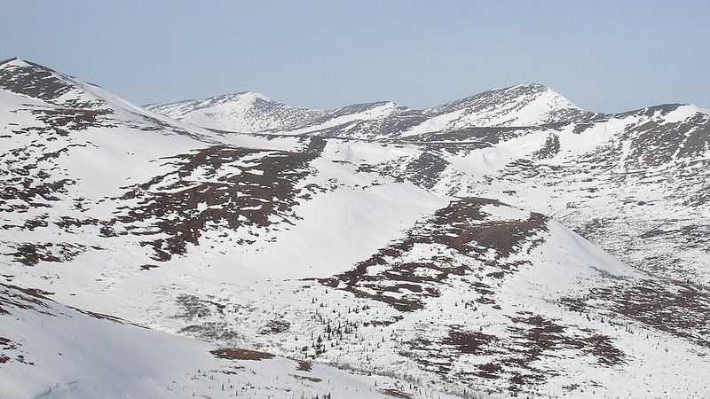

Home › Photo credits
Photo creditsThe photographs on this site
Diagrams and charts are our own. The photographs come from Wikimedia Commons under free licences (public domain, CC0, CC BY or CC BY-SA); they are shown cropped and with a dark overlay. Thank you to every photographer below.

Analyzing Financial Data (5099605109)
Photo: Dave Dugdale from Superior, USA, CC BY-SA 2.0, Wikimedia Commons
.jpg){kind=link}

Axenda
Photo: PepedoCouto, CC BY-SA 3.0, Wikimedia Commons

Used on: cfa dates fees, cfa requirements, mock exams

Books in stack with lamps (Unsplash)
Photo: chuttersnap chuttersnap, CC0, Wikimedia Commons
.jpg){kind=link}
Used on: cfa self study, cfa level 1, level 3 constructed response

Books, pencils, laptop, and iphone on a desk (Unsplash)
Photo: Aleks Dorohovich aleksdorohovich, CC0, Wikimedia Commons
.jpg){kind=link}
Used on: study plan, how to prepare, level 2 item sets

Bookshelves Suzzallo Allen Library University of Washington Seattle Washington 2026
Photo: Guywelch2000, CC BY 4.0, Wikimedia Commons

Used on: free resources, choosing prep materials, prerequisites

Chess pieces close up
Photo: Aaaatu, CC BY-SA 4.0, Wikimedia Commons

Used on: level 1 strategy, ready for cfa level 1
Electronic stock board in Yaesu, Tokyo 2007
Photo: nappa, CC BY 2.0, Wikimedia Commons

Used on: cfa jobs salaries, cfa vs frm, cipm and cfa institute programs, cfa pass rates

Long Room Interior, Trinity College Dublin, Ireland - Diliff
Photo: Diliff, CC BY-SA 4.0, Wikimedia Commons

Used on: blog, cfa level 2, cfa vs mba, glossary
Multiple hourglasses
Photo: Sauvagette, CC BY-SA 4.0, Wikimedia Commons

Used on: how long cfa, cfa results, exam day

Panasonic JE-552U keypad closeup
Photo: Fortunny, CC BY 4.0, Wikimedia Commons


Pinnell Mountain Trail from Eagle Summit. - panoramio
Photo: bottomdollar, CC BY-SA 3.0, Wikimedia Commons

Used on: hardest cfa topics, cfa level 3

Sand clock Enschede
Photo: Gianluca Miscione, CC BY-SA 4.0, Wikimedia Commons

Used on: cfa time to pass

Skyline Frankfurt Flößerbrücke
Photo: Nicolas17, CC BY-SA 3.0, Wikimedia Commons

Used on: cfa level 1 job, cfa for engineers

Skyline Frankfurt am Main
Photo: Nicolas Scheuer, CC BY-SA 2.5, Wikimedia Commons

Used on: cfa program, cfa salary, most searched

Spiral staircase in the Vatican Museums from bottom 02
Photo: Wilfredor, CC0, Wikimedia Commons

Used on: why cfa is hard, cfa level differences


The scales of justice (4984060658)
Photo: James Cridland from Brisbane, AU, CC BY 2.0, Wikimedia Commons
.jpg){kind=link}
Used on: ethics

Torc Mountain summit S 20 IMG 20250801 1210
Photo: Nunulark, CC0, Wikimedia Commons

Used on: cfa any background, level 3 pathways

Trekking trail of Netravati peak from the summit (Zoomed in)
Photo: iMahesh, CC BY-SA 4.0, Wikimedia Commons
.jpg){kind=link}
Used on: is cfa worth it

Wooden spiral stairs (Nebotičnik, Ljubljana)
Photo: Petar Milošević, CC BY-SA 4.0, Wikimedia Commons
.jpg){kind=link}
Used on: cfa study order, first principles method